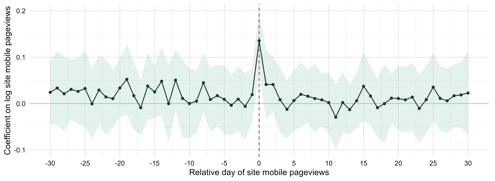
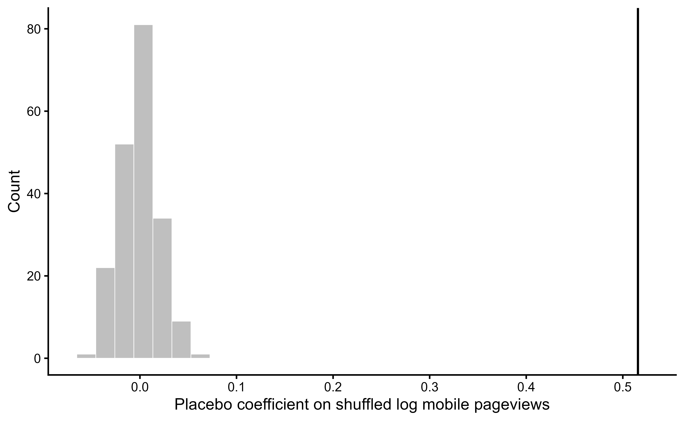
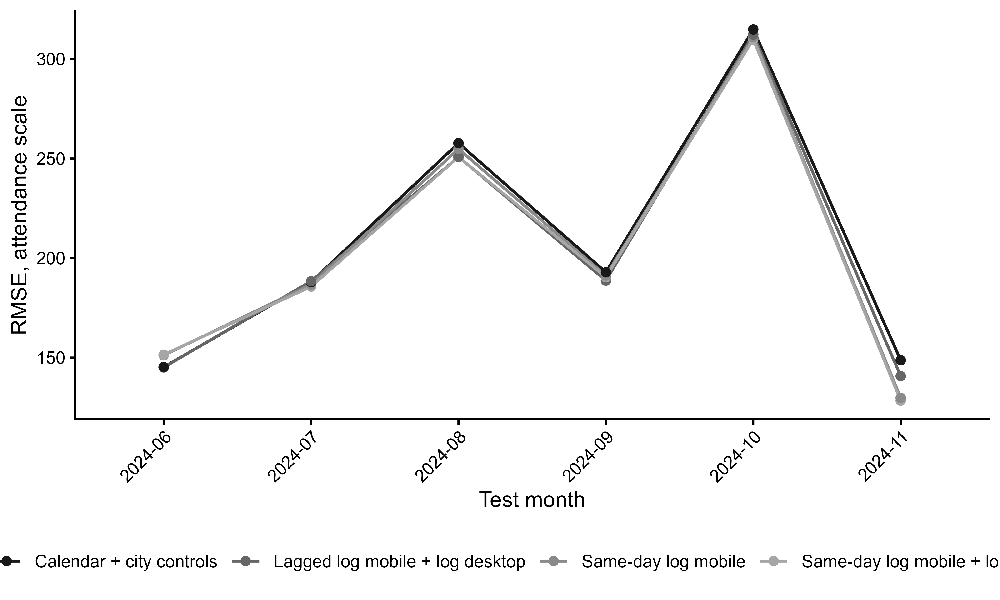

The panel contains 7,422 site-day observations, 6 venues, and 1,237 dates from 2021-07-01 to 2024-11-18.
| Statistic | Value |
|---|---|
| Observations | 7,422 |
| Venues | 6 |
| Dates | 1,237 |
| Zero-attendance share | 15.10% |
| Mean attendance | 133.48 |
| Mean mobile pageviews | 4.22 |
| Median mobile pageviews | 3.00 |
The preferred specification is the log-log TWFE lead-lag model with lagged attendance, venue fixed effects, exact-date fixed effects, venue-by-year-month fixed effects, and venue-by-day-of-week fixed effects. Inference uses Driscoll-Kraay standard errors with a 30-day bandwidth and Bonferroni simultaneous 95 percent confidence intervals across the 61 lead-lag coefficients.
| Model | Day-0 log mobile | Simultaneous 95% CI | R2 | Within R2 | N |
|---|---|---|---|---|---|
| Preferred DK lead-lag timing | 0.1355*** (0.0191) | [0.0716, 0.1994] | 0.908 | 0.088 | 7056 |
The preferred coefficient is 0.1355*** (0.0191). Interpreted in the log(1+x) metric, a 1 percent increase in same-day mobile Wikipedia pageviews is associated with about a 13.550 percent increase in attendance, conditional on the full timing profile and fixed effects.
| Relative day | Estimate | DK SE | Simult. CI low | Simult. CI high | |
|---|---|---|---|---|---|
| log_mobile_m5 | -5 | 0.0090 | 0.0220 | -0.0647 | 0.0827 |
| log_mobile_m4 | -4 | -0.0037 | 0.0194 | -0.0684 | 0.0611 |
| log_mobile_m3 | -3 | 0.0095 | 0.0208 | -0.0602 | 0.0792 |
| log_mobile_m2 | -2 | -0.0060 | 0.0214 | -0.0775 | 0.0654 |
| log_mobile_m1 | -1 | 0.0194 | 0.0174 | -0.0390 | 0.0778 |
| log_mobile_0 | 0 | 0.1355 | 0.0191 | 0.0716 | 0.1994 |
| log_mobile_p1 | 1 | 0.0412 | 0.0222 | -0.0331 | 0.1155 |
| log_mobile_p2 | 2 | 0.0412 | 0.0176 | -0.0178 | 0.1002 |
| log_mobile_p3 | 3 | 0.0084 | 0.0209 | -0.0615 | 0.0783 |
| log_mobile_p4 | 4 | -0.0124 | 0.0189 | -0.0756 | 0.0508 |
| log_mobile_p5 | 5 | 0.0066 | 0.0193 | -0.0581 | 0.0713 |

| Diagnostic model | Day-0 coefficient | Interpretation | R2 | Within R2 | N | |
|---|---|---|---|---|---|---|
| 2 | Joint t-1/t/t+1 timing | 0.3960*** (0.0403) | Same-day association net of adjacent mobile days | 0.656 | 0.086 | 7410 |
| 3 | AR controls: lagged attendance + 7 mobile lags | 0.2516*** (0.0291) | Same-day association net of lagged attendance and previous-week mobile traffic | 0.744 | 0.315 | 7380 |
| 4 | Mobile innovation: residual from 7 mobile lags | 0.3390*** (0.0414) | Association with unpredictable same-day mobile attention | 0.633 | 0.020 | 7380 |
These diagnostics explain why the conservative lead-lag coefficient is smaller than the simple same-day association. Once serial correlation and site-specific seasonality are handled, the defensible estimate is the day-0 coefficient from the preferred model.
| Placebo diagnostic | Value |
|---|---|
| Observed same-day log coefficient | 0.5157 |
| Within-date shuffle mean | -0.0007 |
| Within-date shuffle SD | 0.0200 |
| Within-date shuffle 95th percentile | 0.0329 |
| Share of shuffled coefficients >= observed | 0.0% |
| Rotated-site placebo coefficient | 0.1206*** (0.0363) |
| Rotated-site / observed coefficient | 0.234 |

The nowcasting exercise evaluates prediction on the attendance scale. RMSE is useful when large misses matter operationally, but it is complemented with MAE, log-RMSE, and correlations because closures and exceptional events can generate large errors that no baseline model can predict.
| Model | RMSE | MAE | Log RMSE | Correlation | N | Test start |
|---|---|---|---|---|---|---|
| Same-day log mobile + log desktop | 220.36 | 103.92 | 1.194 | 0.499 | 1080 | 2024-05-23 |
| Lagged log mobile + log desktop | 220.55 | 104.11 | 1.202 | 0.490 | 1080 | 2024-05-23 |
| Same-day log mobile | 222.11 | 104.61 | 1.188 | 0.493 | 1080 | 2024-05-23 |
| Calendar + city controls | 223.11 | 104.32 | 1.230 | 0.462 | 1080 | 2024-05-23 |
| Model | Mean RMSE | Mean MAE | Mean log RMSE | Mean correlation |
|---|---|---|---|---|
| Same-day log mobile + log desktop | 202.74 | 100.07 | 1.181 | 0.559 |
| Same-day log mobile | 204.08 | 100.49 | 1.176 | 0.554 |
| Lagged log mobile + log desktop | 204.30 | 100.40 | 1.188 | 0.539 |
| Calendar + city controls | 207.87 | 101.10 | 1.209 | 0.516 |

The clean interpretation is narrow: same-day mobile Wikipedia attention is a real-time signal of public interest in a venue. It should not be presented as a causal effect of Wikipedia browsing on attendance and it should not be treated as a visitor counter. Its main value is as a contemporaneous nowcasting signal, especially when attendance departs from predictable calendar patterns.